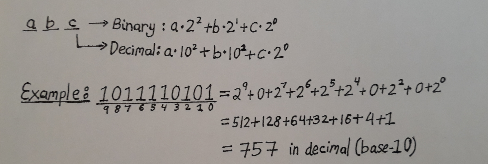
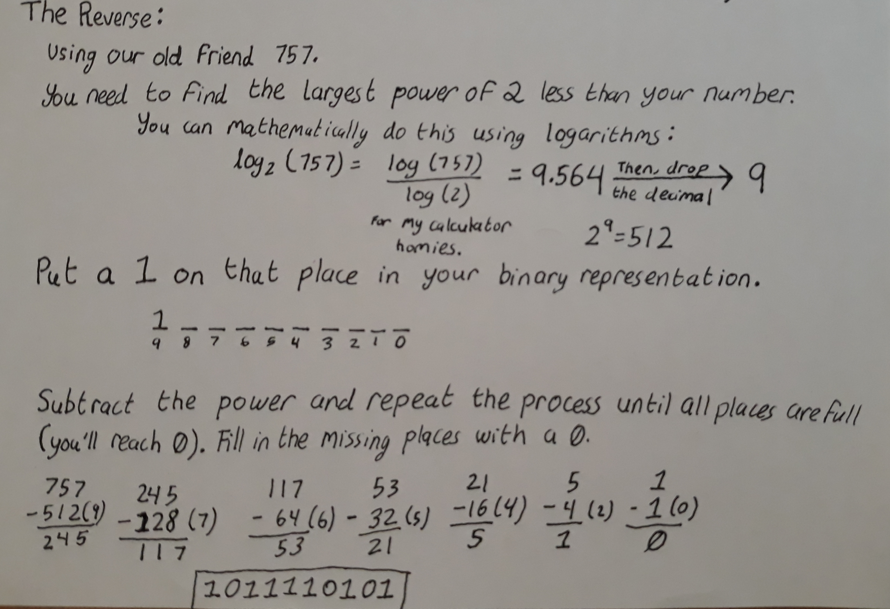

Fundamentals
Bits and Bytes
A bit is simply a 0 or 1 value. This comes from the microscopic switches inside of the computer that control the signals passing through the hardware. These switches can either be off or on, to which humans assigned the values of 0 and 1.
This bit is the basis for all software, controlling the operations of mathematics and logic that become everything in our computers. That is why I deem it necessary to start here.
Binary numbers are a collection of bits that are read together. They operate on a base-2 system, in contrast to the familiar base-10 system of decimals.
The decimal system is called base-10 because of its 10 digits: 0 - 9. A single place in the number can only hold upto a value of 9. If we exceed that, then we need to carry a 1 to the next higher place, and return our previous place to 0 (empty).
For a binary number, each place can only hold 2 digits, 0 and 1. If you exceed the value of 1, then you must go onwards to the next place, and return the previous place to 0.
| Decimal |
0 |
1 |
2 |
3 |
4 |
5 |
6 |
7 |
8 |
9 |
10 |
11 |
| Binary |
0 |
1 |
10 |
11 |
100 |
101 |
110 |
111 |
1000 |
1001 |
1010 |
1011 |
This idea may become clearer as we look at how to read these numbers. In the decimal system, we call the places names like: ones, tens, hundreds, thousands, etc. The number in that place represents how many of that place we have in the number (like how many ones, or hundreds). In a binary number, the places would be called the ones, the twos, the fours, the eights, the sixteens, doubling every place.
We can convert this kind of reading into a mathematical expression: a sum of all the products between the digit and their place (See example if the wording is confusing).

This is intuitive in base-10, but we can use this to easily convert a binary number into its more understandeable decimal form. This time, however, our digits are only 0 or 1, and our places are to powers of two.
Now that we can convert binary to decimal, you may be interested in the reverse. To do that, we need to use the logarithm operation with a base of 2. That will get us the largest 1 digit in our binary representation. We then subtract the value of the digit we put down from the number, and repeat the process until we reach zero. Any places that do not have a 1 are filled in with a zero.

We want to understand binary numbers to better understand how or why things are in the computing world.
A byte is a binary number of 8 bits. It represents the smallest unit of memory that is typically relevant. It is rare to deal with bit to bit manipulation. With our understanding of binary numbers, we know that a byte has a range of 512 values.
Now we can discuss datatypes. A datatype is a way to interpret a bundle of bytes in a form that is not binary.
Simple Data Types
NUMBERS
| Name |
Type |
Bytes |
Range |
| char |
Integer |
1 |
-128 to 127 |
| short |
Integer |
2 |
-32,768 to 32,787 |
| int |
Integer |
4 |
-2,147,483,648 to 2,147,483,647 |
| long |
Integer |
8 |
-9,223,372,036,854,775,808 to 9,223,372,036,854,775,807 |
| Float |
Decimal |
4 |
+/-1.175494351 * 10^-38 to +/-3.402823466 * 10^38 |
| Double |
Decimal |
8 |
+/-2.2250738585072014 * 10^-308 to +/-1.7976931348623158 * 10^308 |
Integers are converted from binary directly to decimal. However, their first bit is used to store the sign, using 1 to denote a negative. For example, a char is 8 bits, but 7 are used to store the value. 0000 0000 is 0. 1000 0000 is -1. 1111 1111 is -128. 0111 1111 is 127. Alternatively, you can have an unsigned number, where all the bits are used for the value. An unsigned char reaches from 0 to 256.
Floating-points are non-integer numbers, decimals. They are stored based on the scientific notation, but in base-2, in a notation called IEEE 754.
Note that IEEE 754 is not something you need to intimately know for many coding experiences.
Anyways when talking about IEEE, we must first discuss floating point binary. Just as how a decimal place after the point in a number is a negative exponent of 10, binary floating point is constructed using negative exponents of base 2. *Image Please*
So when you have a decimal floating point number, you need to convert it into a binary floating point. Then you need to "move the point" like in scientific notation so that you have a 1 left of the decimal point. Moving the point to the left gives you a factor of 2^1. Moving the point to the right gives you a factor of 2^-1. This gives you something like (-)1.x * 2^y, where x is the fractional amount in binary, and y is an integer exponent in decimal, positive or negative.
The IEEE 754 format breaks down a floating point binary number into three parts: the sign, the biased exponent, and the fraction. This bias is used to store negative and positive numbers in binary based on their poisition relative to a shift, in this case the middle. In a float, this bias is 127. In longs, the bias is 1023. These values come from the number of bits used to make up the exponent. You apply the bias by simply adding the bias to the exponent. You'll then want to convert that biased exponent into a binary integer.
Then, you fill in each part of the floating point based on the data type. Note that the fraction is everything right of the decimal. When reading a floating point number, the computer will know that there is supposed to be a 1 before the decimal point.
Float: 1 bit sign, 8 bit exponent, 23 bit fraction
Double: 1 bit sign, 11 bit exponent, 52 bit fraction
There are 3 more simple datatypes that you need to understand.
First is the boolean: a True or False value. You may think this only requires 1 bit, but it requires 2 bytes of storage. Right now, I am not sure as to why, but hopefully I can get back to that.
The second is the char. Earlier we talked about chars as 1 byte integers. However, many programming languages are capable of translating those chars into text, or symbols. This is done by the ASCII conversion chart, an agreed upon system of 256 characters mapped onto specific numbers/binary patterns. Many times, a program can fluidly treat characters as text symbols and numbers. INCLUDE ASCII CHART
The last simple datatype is called a pointer, which like a char, is a specific way of interpreting a number. This time it is a long, usually. Keep this name in mind because it becomes easier to understand once we go over the next idea.
Variable
A variable is a way of storing values in the computer's memory. A variable needs to be initialized (setting the name and space of the variable) and assigned a value (giving the variable a value to hold). Afterwards, you can call upon it using the variable's name. The variable's value can be manipulated and reassigned. They way to invoke these processes of initialization, assignment, and reassignment are based on the language that you use.
INSERT EXAMPLE FOR VARIABLES
When a variable is stored, it has 3 parts: a name, a value, and an address. This address is a long that refers to a spot in the memory of a computer: a pointer. The length of a pointer depends on the kind of processor your computer has. A 64-bit processor means a long. A 32-bit pointer will have int pointers/addresses.
Pointers are an interesting datatype because they are so intimately tied to the computer's thinking. You can use the pointer in order to interact with the value stored there. But, you can also interact with the pointer itself. However, this often can leave values floating around in the memory. That is because you changed the address, so it will not refer to the same spot in the memory. Pointers are instrumental in bit manipulations. If pointers boggle your mind still, have no worries. We'll become intimately familiar with them when we go over C. As for now, think of them as addresses to an area of your computer's memory.
Operations
We have spent a lot of time talking about the basic values within a computer. But now, let's discuss using those values.
We'll start with the mathematical operators.
- '+' adds two numbers
- '-' subtracts the second number from the first
- '*' multiplies the two numbers
- '/' divides the first number by the second
- '%' gives you the remainder that comes from dividing the first number by the second
These are your key 5 operations when programming. We distinguish operators from functions because of the use of symbols instead of words. It is also important to note that different programming languages implement these operators differently, or even add extra operators PYTHON.
These operators are used with numbers to create mathematical expressions. There are 3 styles of expressions: prefix, infix, postfix. You are likely to be most familiar with infix, where the operator comes between the numbers. Prefix has the operator before the numbers, and postfix after. While these other two may seem confusing to you now, they make a lot of sense in the computing world. Many early calculators operated on prefix or postfix because of how easy they are two implement when compared to infix. Infix is the only notation that requires an order of operations.
| Infix |
2 + 3 |
(12 + 18) / (17 - 11) |
(2 + 2)^2 + 5^2 * (3^3 / 1 + 1) |
| Prefix |
+(2 3) |
/( +(12 18) -(17 11) ) |
+( pow( +(2 2) 2) *( pow(5 2) +( /( pow(3 3) 1) 1 ) ) ) |
| Postfix |
2 3 + |
12 18 + 17 11 - / |
2 2 + 2 pow 5 2 pow 3 3 pow 1 / 1 + * + |
Provide Extra on Showing How Postfix and Prefix Works
We also have the logical operators, which work on booleans. There are 4 boolean operators to build boolean expressions.
- x '&&' y ('and') results in true if both x is true and y is true. It is false in all other cases.
| x |
y |
x && y |
| True |
True |
True |
| True |
False |
False |
| False |
True |
False |
| False |
False |
False |
- x '||' y ('or') results in true if at least one of the two, x or y, is true. If both x is false and y is false, the statement is false.
| x |
y |
x || y |
| True |
True |
True |
| True |
False |
True |
| False |
True |
True |
| False |
False |
False |
- '!'x ('not') results in the opposite of x. If x is true, !x is false. If x is false, !x is true.
| x |
!x |
| True |
False |
| False |
True |
- x '^' y ('xor') results in true if x is different from y. If both x and y are true or both x and y is false, then the statement is false. x ^ y is true if only one of the two is true and the other one is false.
| x |
y |
x ^ y |
| True |
True |
False |
| True |
False |
True |
| False |
True |
True |
| False |
False |
False |
Finally, we have comparative operators, which turn numbers into boolean values. These are very useful for when we go over decision making in code.
- x '>' y results in true if x is more than y. Else, the statement is false.
- x '>=' y results in true if x is more than y or x is equal to y. Else, the statement is false.
- x '<' y results in true if x is less than y. Else, the statement is false.
- x '<=' y results in true if x is less than y or x is equal to y. Else, the statement is false.
- x '==' y results in true if x is equal to y. Else, the statement is false.
- x '!=' y results in true if x is not equal to y. If x equals y, the statement is false.
Functions
To round out our bare, bare fundamentals, we must talk about functions. Just as variables store values, a function will store segments of code. Anything you can do outside of a function, you can put inside of it. Why would you do that? Putting segments of code allows you to reuse it without having to type it all out. The less typing you have to do, the fewer chances you have of making silly mistakes and typos. The way functions are written are language specific. These examples are pseudocode.
But functions can do so much more than reiterate the same block of code. Functions can be made with parameters. These are placeholder variables made with the function that can be used within the function, and only within that function. When the function is called with its name, the same number of arguments are given with it. With that function call, the code is run with those arguments substituting in the place of its respective parameter. This allows a function to be used on a variety of values and variables.
Adding to the flexibility of functions are conditionals. Conditionals are usually their own thing, but they see the most use in functions for decision making. They can be used outside if the language permits it (You'll see when we go into the language lessons). They have three parts: if, else if (elif), and else.
If statements have a boolean statement and a code block. If the boolean statement is equivalent to true, then that code block is run. If an if statement has an else statement, then the code block related to that will run.
Else statements will only run if the boolean expression of their if statement is false.
Else if (elif) statements combine the two kinds of statements. They have a boolean expression like an if statement, but will only run if previous if and elif statements are false.
When you have a chain of if, elifs, and else statements, the program starts with the if statement. If it is false, it will go on to the next elif statement. If all the elifs' boolean statements also turn out false, then the else code block will run.
Furthermore, you can nest conditionals, each with their own chains of ifs, elifs, and elses. When doing so, you must be careful on what level each conditional statement is on.
The final key basic of a function is the return value. A function may, but not always, end in a return statement. When that return statement is reached, no more code in the function is run. That is because the return value of the function is the final value that will replace the call of the function. If you have a function invocation (call) in an assignment, expression, or whatever, that function call is internally replaced with the return value, given its arguments, when evaluating.